Desktop Optimise✦Mode gaming✦Retour au calme✦Nettoyage✦Diagnostic✦Tout annuler✦Desktop Optimise✦Mode gaming✦Retour au calme✦Nettoyage✦Diagnostic✦Tout annuler✦Desktop Optimise✦Mode gaming✦Retour au calme✦Nettoyage✦Diagnostic✦Tout annuler✦Desktop Optimise✦Mode gaming✦Retour au calme✦Nettoyage✦Diagnostic✦Tout annuler✦
TheEclipseCraft✦Wiki✦Crafts✦Stats en direct✦Récap de partie✦Guide d’aventure✦10 thèmes✦TheEclipseCraft✦Wiki✦Crafts✦Stats en direct✦Récap de partie✦Guide d’aventure✦10 thèmes✦TheEclipseCraft✦Wiki✦Crafts✦Stats en direct✦Récap de partie✦Guide d’aventure✦10 thèmes✦TheEclipseCraft✦Wiki✦Crafts✦Stats en direct✦Récap de partie✦Guide d’aventure✦10 thèmes✦
La gamme
Deux apps, deux saveurs. L’une remet ton PC d’attaque, l’autre accompagne tes parties de Minecraft.
Saveur n°1 · Turbo
Allan Vituv5.0.0Desktop OptimiseGaming · Dev · Calme
Desktop Optimise
Mode gaming par jeu
Retour au calme auto
Tout annuler en 1 clic
Desktop Optimise
Windows · Gratuit
Desktop Optimise
Mon PC portable ramait en jeu, alors j’ai codé l’antidote : un mode gaming par jeu qui ferme le superflu, pousse le processeur et remet tout au calme quand la partie se termine.
Allan Vituv5.0.0Desktop OptimiseGaming · Dev · Calme
Desktop Optimise
Mode gaming par jeu
Retour au calme auto
Tout annuler en 1 clic
Desktop Optimise
Windows · Gratuit
Saveur n°1 · Turbo
Desktop Optimise
Mode gaming en un clic, retour au calme tout seul.
Desktop Optimise, c'est l'app que je me suis construite pour mon Dell Latitude 5400 : avant une partie de LoL, TFT ou Minecraft, elle ferme le superflu et pousse le processeur, puis remet le PC au calme dès que le jeu se ferme. Nettoyage des caches, démarrage, diagnostic noté sur 100 et suivi des plantages du GPU complètent la boîte à outils, avec sauvegardes et bouton « Tout annuler ».
18
catégories de nettoyage, que des caches qui se reconstruisent
10
sections au diagnostic, résumées en un score sur 100
3
jeux suivis : LoL, TFT, Minecraft
15 s
entre deux coups d’œil au jeu, pour le retour au calme
Choisis ton jeu : l'app montre ce qu'elle va fermer (tu décoches ce que tu gardes), garde le lanceur du jeu, active le plan GAMING et « Meilleures performances », peut couper WSL / Docker, puis lance la partie.
Retour au calme automatique
Après le mode gaming, l'app jette un œil au jeu toutes les 15 s. Quand il se ferme, le PC repasse en mode normal et une notification Windows le signale. Fermer la fenêtre la range près de l'horloge.
Tableau de bord en direct
Disque, mémoire, processeur et batterie en anneaux, courbe CPU / RAM des 3 dernières minutes et score de santé. Le relevé ne tourne que quand la fenêtre est visible.
Un nettoyage qui ne casse rien
Analyse d'abord, puis tu coches : caches de Windows, des navigateurs, de Discord, des jeux et des outils de dev. Jamais de documents, de mots de passe, de mondes Minecraft ni de profils.
Diagnostic & rapport HTML
En lecture seule : disque, mémoire, alimentation, démarrage, carte graphique, stabilité des jeux, processus, gros dossiers. Un score sur 100, des conseils concrets et un rapport exportable.
Stabilité du GPU et des jeux
Les journaux de Windows sont passés au crible sur 30 jours (plantages du GPU, jeux gelés, mémoire saturée), puis trois correctifs sont proposés, dont un pilote Intel à l'empreinte SHA-512 vérifiée.
Démarrage & applications
Active ou coupe ce qui se lance avec Windows, par le même mécanisme que le Gestionnaire des tâches : rien n'est effacé, tout se réactive. Et ferme les applis qui pèsent le plus en mémoire.
Entretien, optimisation, « Tout annuler »
Entretien complet (Windows Update, Defender, winget, pilote), optimisation précédée d'un point de restauration, sauvegardes et restauration en un bouton. Tout est noté dans un journal horodaté.
En vrai, ça donne ça
4 captures · faites défiler →
Desktop Optimise
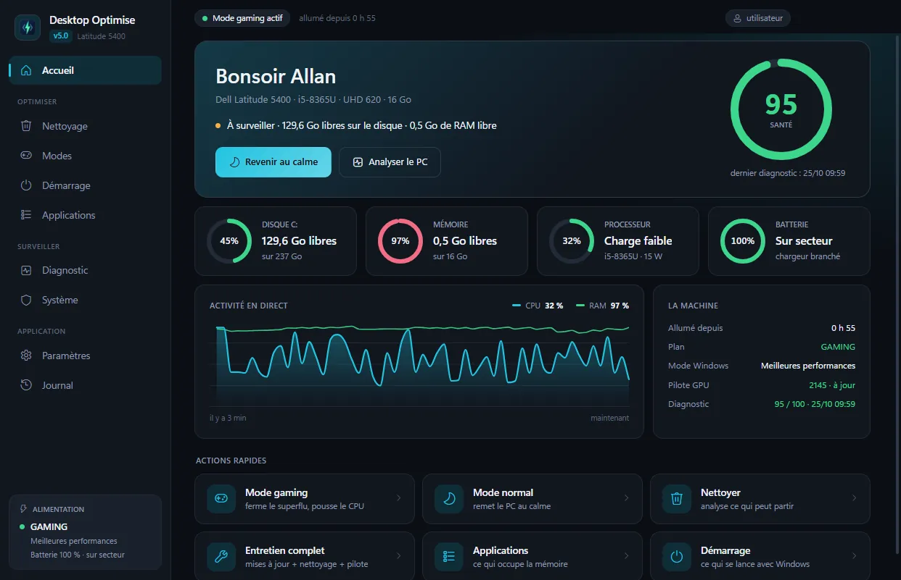
Accueil : score de santé, jauges disque, mémoire, processeur et batterie, courbe CPU et RAM des trois dernières minutes
Desktop Optimise
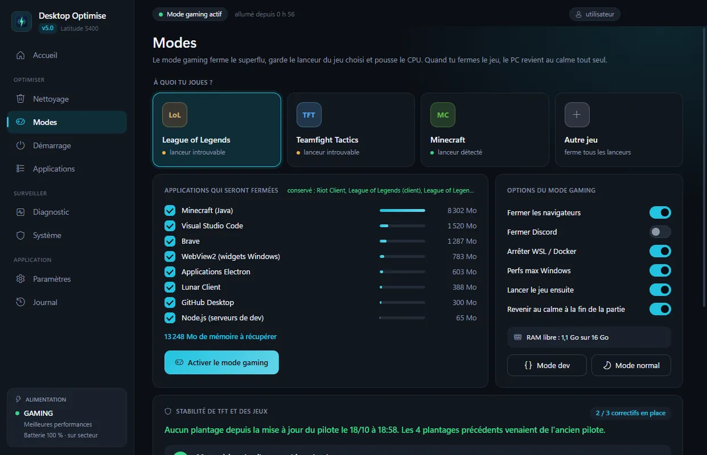
Modes : choix du jeu, applications que le mode gaming fermera, options du mode et stabilité des jeux
Desktop Optimise
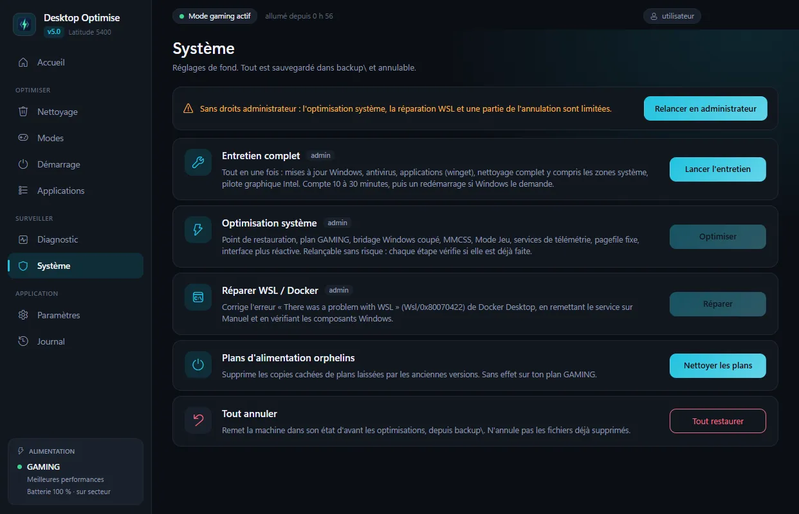
Système : entretien complet, optimisation, réparation WSL / Docker et bouton « Tout annuler »
Desktop Optimise
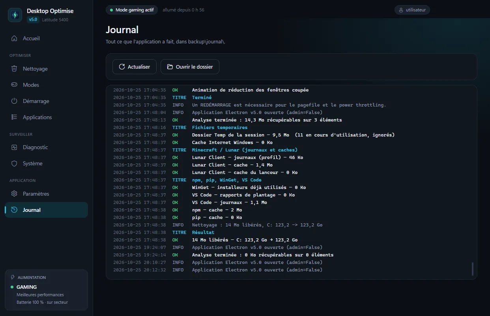
Journal : chaque analyse, nettoyage et réglage, ligne par ligne et horodaté
Installer en 3 étapes
Télécharge le ZIP et extrais le dossier Desktop Optimise où tu veux (par exemple dans %LOCALAPPDATA%\Programs).
Ouvre Desktop Optimise.exe. À l’alerte SmartScreen : Informations complémentaires → Exécuter quand même.
Commence par Analyser le PC : le diagnostic ne modifie rien et te dit quoi faire ensuite.
Windows 10 / 11 · 64 bits
PowerShell 5.1 (inclus dans Windows)
≈ 370 Mo une fois décompressé
Admin seulement pour certaines actions
Internet facultatif
Allan Vituv2.0.0TheEclipseCraftCompagnon Minecraft
TheEclipseCraft
1 657 items, 1 714 recettes
Stats en direct
Récap de chaque partie
TheEclipseCraft
Windows · Gratuit
Saveur n°2 · Éclipse
TheEclipseCraft
L’établi de poche qui suit ta partie en direct.
TheEclipseCraft lit ta propre installation de Minecraft Java pour afficher ta vie, ton inventaire, tes progrès et ta dernière mort, et te guide en 11 étapes du premier jour jusqu'au Wither. Wiki, 1 714 recettes, 84 commandes et historique de tes parties : tout fonctionne hors ligne, sans compte, et sans jamais modifier tes mondes.
Vie, faim, XP, armure, position, effets et inventaire avec les sprites du jeu. Ta dernière mort et ton point de réapparition, avec la commande /tp prête à copier.
Aventure guidée
Une feuille de route en 11 étapes, du premier jour au Wither, cochée toute seule à partir de tes stats et progrès. Conseils du moment, quêtes annexes et progrès à collectionner.
Wiki & crafts hors ligne
1 657 items, 88 créatures, 68 biomes, 44 enchantements, 41 effets et 21 structures, plus les 1 714 recettes de ton jeu. Le mode « Avec mon inventaire » montre ce que tu peux fabriquer.
Historique & récap de partie
Chaque partie, suivie en direct ou reconstruite depuis tes anciens logs : chronologie des progrès et des morts, temps de jeu par jour, note perso, sauvegardes .zip de tes mondes.
Commandes & RCON
84 commandes Java, gamerules, sélecteurs et un constructeur. Avec RCON activé, la commande part directement au serveur ; sinon elle est copiée, prête à coller en jeu.
Overlay en jeu
Une mini-fenêtre toujours au premier plan (Ctrl+Maj+O) : session, vie, dernière mort, objectif en cours et derniers événements. Elle n'a accès qu'à une API en lecture.
10 thèmes & accessibilité
Éclipse, Halo, Overworld, Cerisier, Nether, L'End… et « Suivre Windows ». Un thème à contraste élevé, une palette pour le daltonisme, tout au clavier, animations réduites.
Outils & serveurs
Convertisseur Nether ↔ Overworld, points d'intérêt par monde, chunks à slimes, calculateur de stacks, et statut en direct des serveurs enregistrés dans ton jeu.
En vrai, ça donne ça
7 captures · faites défiler →
TheEclipseCraft
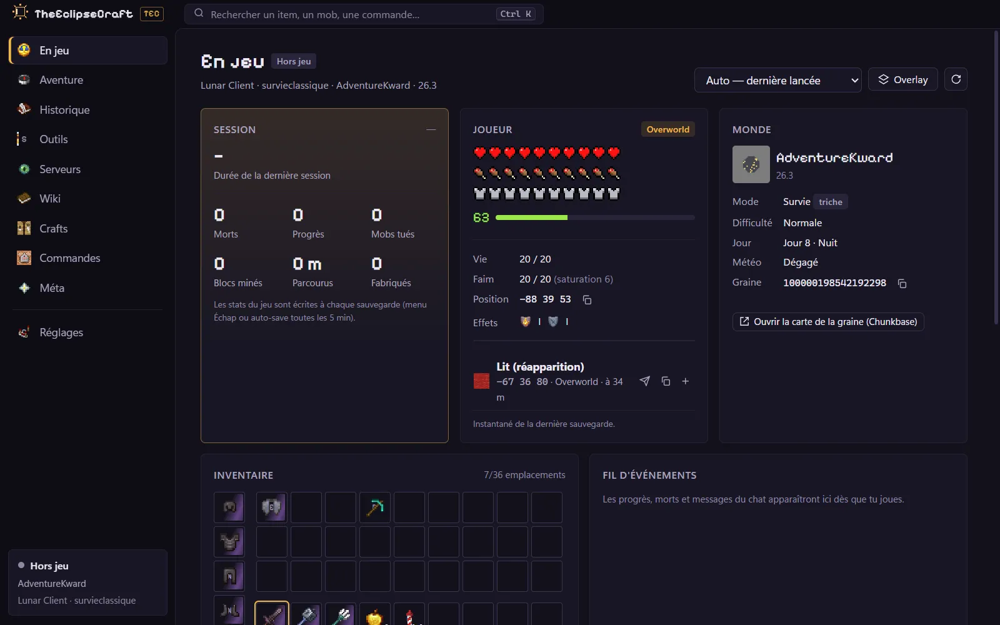
En jeu, thème Éclipse : cœurs, faim, armure, niveau, position, lit de réapparition, monde et inventaire
TheEclipseCraft
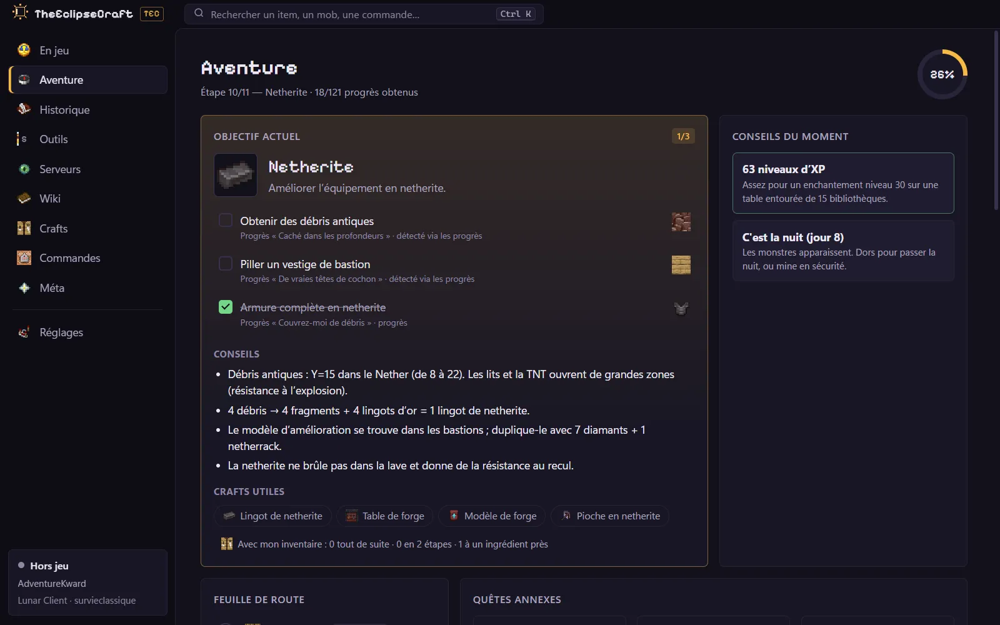
Aventure : étape 10 sur 11 « Netherite », objectifs cochés automatiquement, conseils et crafts utiles
TheEclipseCraft
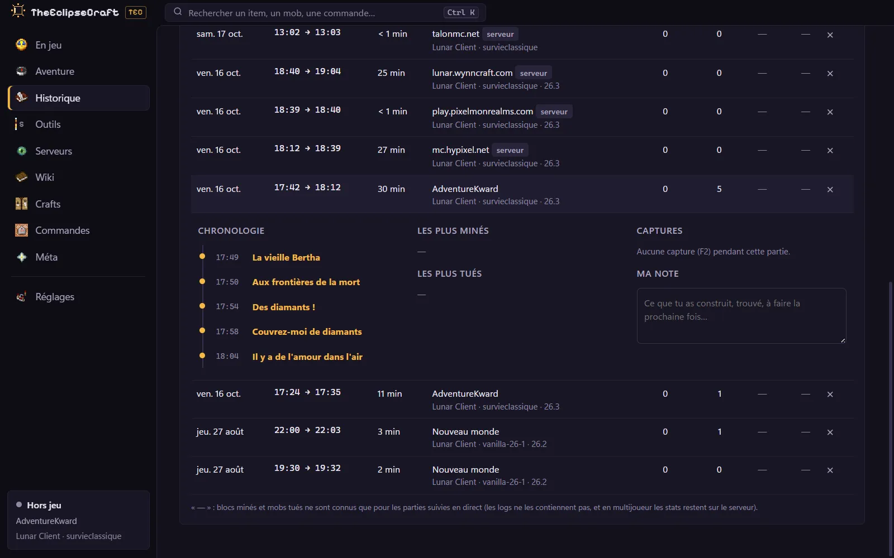
Historique : la liste des parties et le récap d’une session, avec la chronologie de ses progrès
TheEclipseCraft
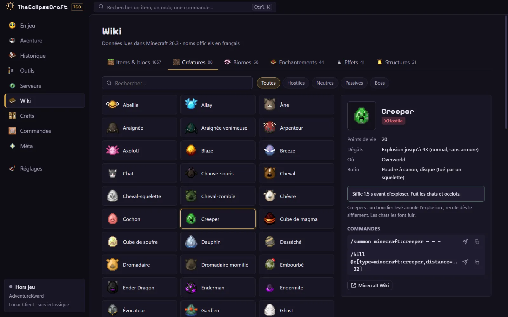
Wiki, onglet Créatures : les 88 mobs du jeu et la fiche du Creeper, avec ses commandes
TheEclipseCraft
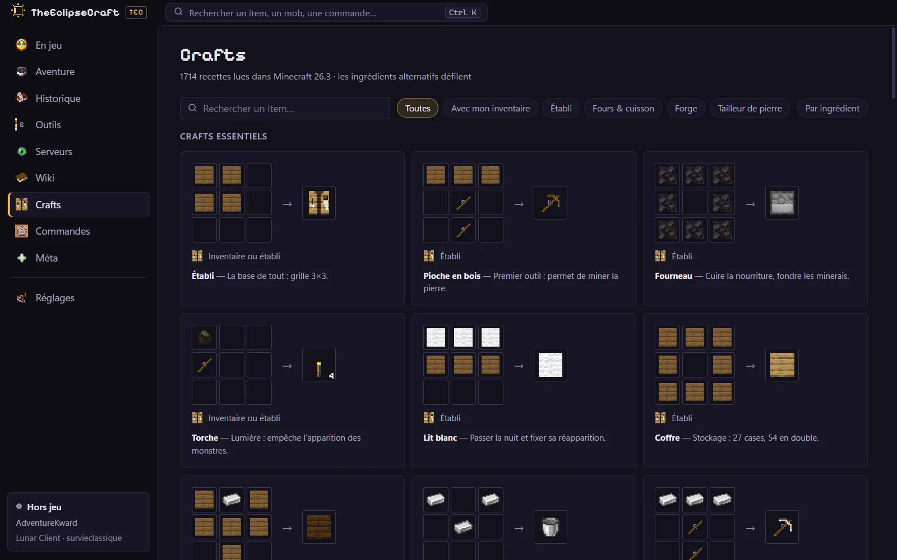
Crafts : les 1 714 recettes lues dans le jeu installé, grille par grille
TheEclipseCraft
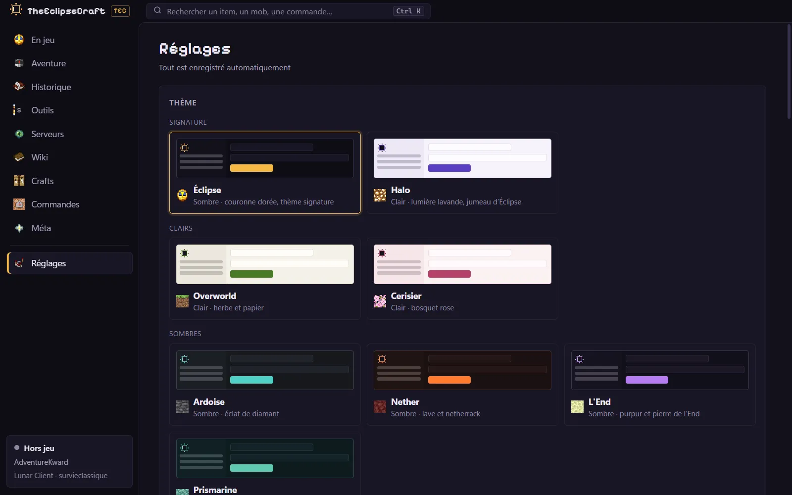
Réglages : les thèmes Éclipse, Halo, Overworld, Cerisier, Ardoise, Nether, L’End et Prismarine
TheEclipseCraft
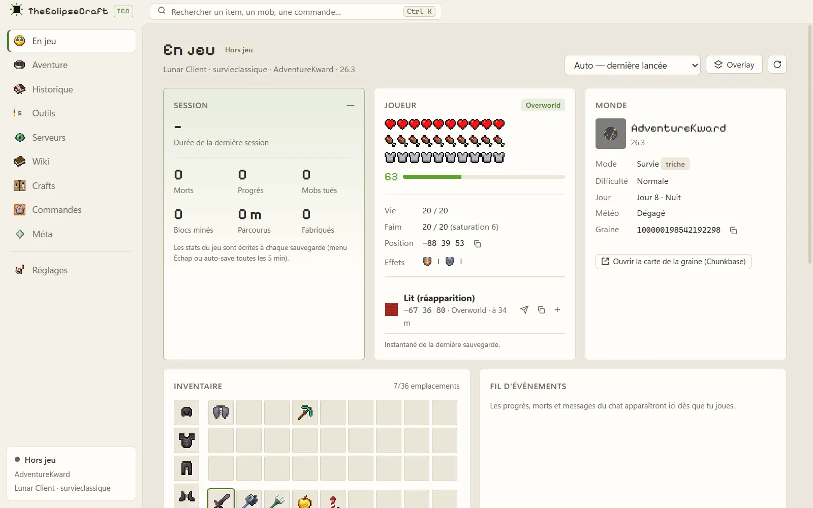
La même page En jeu avec le thème clair Overworld, tons papier et vert herbe
Installer en 3 étapes
Télécharge le ZIP et extrais-le où tu veux (par exemple dans Documents).
Ouvre le dossier TheEclipseCraft et lance TheEclipseCraft.exe. À l’alerte SmartScreen : Informations complémentaires → Exécuter quand même.
Lance Minecraft Java avec ton lanceur : TEC détecte l’instance et suit ta partie tout seul.
Windows 10 / 11 · 64 bits
Minecraft Java (testé avec la 26.3)
Sans droits admin
≈ 370 Mo une fois décompressé
Internet facultatif
Laquelle est faite pour toi ?
Desktop Optimise
Tu joues à LoL, TFT ou Minecraft sur un PC portable un peu juste.
Tu veux un mode gaming qui se défait tout seul après la partie.
Tu aimes savoir ce qui est fait : tout est noté et annulable.
Windows affiche « Windows a protégé votre ordinateur ». C’est normal ?
Oui. Les deux apps ne sont pas signées avec un certificat de signature de code (payant), donc SmartScreen ne les connaît pas encore. Clique sur Informations complémentaires, puis sur Exécuter quand même.
Pour t'assurer que le fichier est bien celui que j'ai publié, compare son empreinte SHA-256 (question suivante).
Comment vérifier que le fichier n’a pas été modifié ?
Ouvre PowerShell dans le dossier du téléchargement et tape Get-FileHash .\NomDuFichier.zip. Le résultat doit être identique à l'empreinte SHA-256 affichée sur le ticket de l'app.
C’est vraiment gratuit ?
Oui : pas de publicité, pas de compte, pas d’abonnement. Ce sont des projets personnels que je partage.
Ça marche sur Mac ou Linux ?
Non, Windows 10 et 11 en 64 bits uniquement. Desktop Optimise pilote Windows lui-même, et TEC s’appuie sur les dossiers Windows de Minecraft.
Comment désinstaller ?
Ce sont des versions portables, sans installeur : supprime le dossier dézippé, puis le raccourci que l'app a créé dans le menu Démarrer (Windows en a besoin pour ses notifications). Les réglages restent dans %APPDATA% (Desktop Optimise ou TheEclipseCraft - TEC) : supprime-les aussi pour repartir de zéro.
Pour Desktop Optimise, lance d'abord Tout annuler si tu veux remettre les réglages Windows par défaut. Pour TEC, désactive Lancer au démarrage si tu l'avais activé.
Les apps envoient-elles mes données quelque part ?
Non : pas de télémétrie, pas de compte, pas de serveur à moi. L'analyse REA des deux exécutables n'a relevé aucune requête HTTP, fetch ou WebSocket dans leur code JavaScript.
Les seuls accès à Internet sont ceux que tu déclenches : l'entretien complet et le pilote Intel pour Desktop Optimise, le statut des serveurs Minecraft et RCON pour TEC.
Il y aura des mises à jour ?
Oui, mais pas automatiques : les nouvelles versions arriveront sur cette page et dans les GitHub Releases.